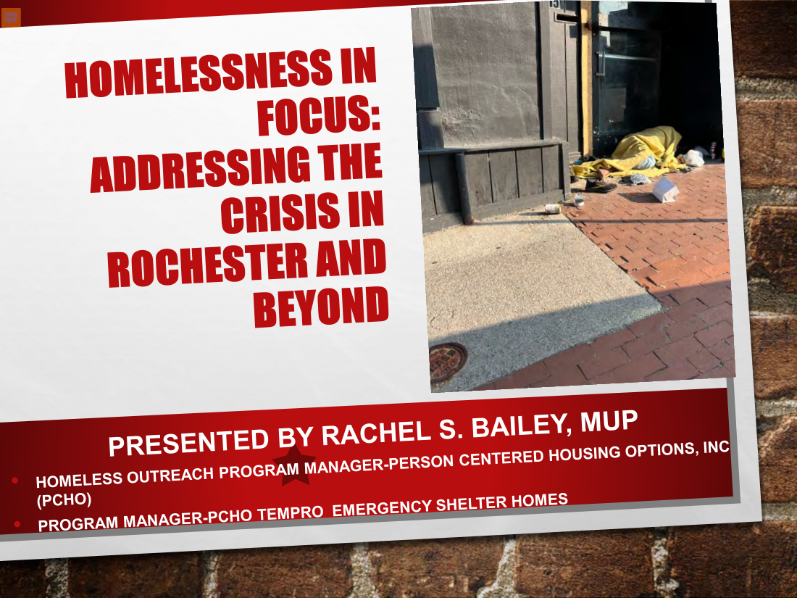
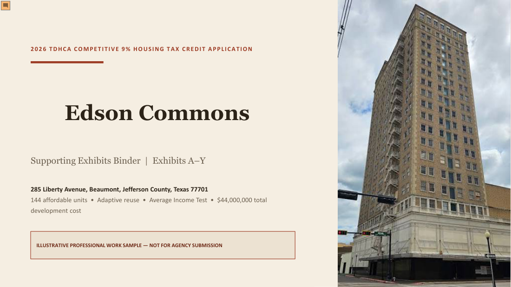

Urban Planning Training,
University at Buffalo
- Land Use
- Environmental Planning and Policy
- Transportation Planning
- Housing and Community Development
“We want a ground to which people may easily go after their day’s work is done.”— Frederick Law Olmsted
My work brings together urban planning education and planning-related experience with community development, affordable housing, marketing communications, research, technical writing, and project and program management. My experience has involved translating community needs, technical information, and project requirements into clear proposals, reports, presentations, and practical strategies. This portfolio highlights selected individual and collaborative work demonstrating my ability to research, organize, communicate, and support projects from concept through implementation.
A collection of individual and collaborative work demonstrating planning, research, data analysis, community development, affordable housing, project management and strategic communication.

A complete mock municipal planning proposal with analysis, strategy, community engagement, schedule, team organization and implementation.

A 90-minute APA conference presentation examining causes, barriers and solutions to homelessness and their planning implications.

Planning analysis for a regional rail-trail connecting communities while addressing mobility, health, environmental justice and economic development.

A full mock TDHCA 9% application including LIHTC financing, development budget, sources and uses, and pro forma.

Analysis of key elements, priorities and implementation strategies from the City of Rochester comprehensive plan.

Evaluation of market conditions, land use, spatial conditions, institutional assets and implementation strategies.
View a professional writing sample demonstrating research, analysis and clear communication.
View Writing Sample →View my cover letter highlighting proposal development, planning, communications, and project management experience.
View Cover Letter →Reports, narratives, presentations and public materials that make complex information clear and compelling.
Proposal writing, compliance, coordination and competitive submissions.
Marketing collateral, branding, content development and communications experience with Xerox, Coombs Media and DeWolf Architects.
Project coordination, grant oversight, budget management, multi-tasking and cross-sector collaboration.
Census data, GIS mapping, spatial analysis, policy research and translation of findings into practical recommendations.